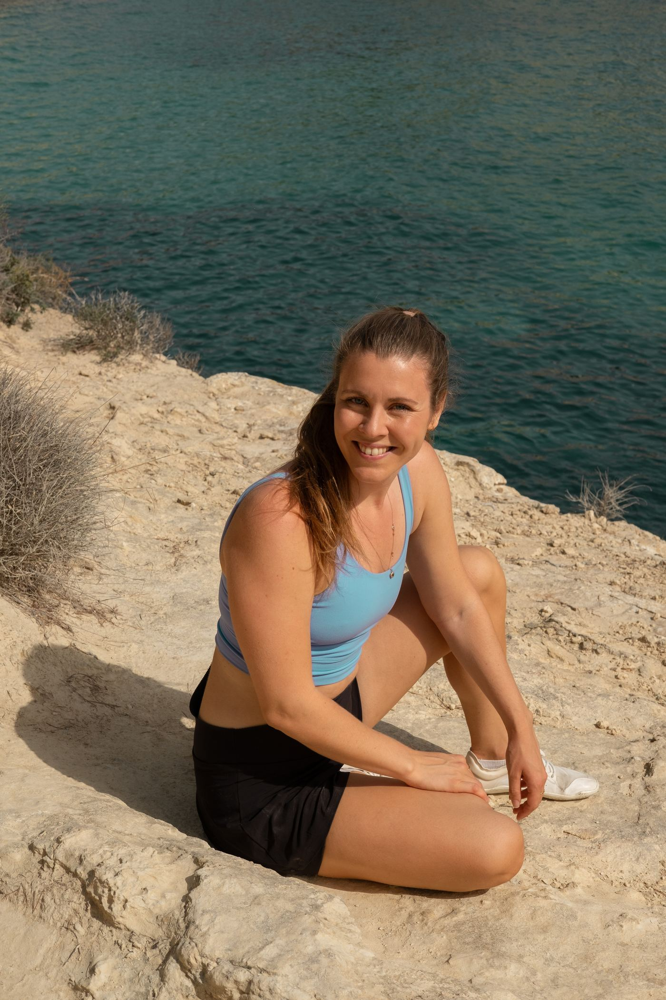

Gymnovites filosofi
Tänk om läkning börjar med information?
Varje upplevelse lämnar ett avtryck. Din hjärna, kropp, dina känslor och erfarenheter formar ständigt hur du rör dig, mår och möter världen.
På Gymnovite ser vi inte styrka, rörelse och läkning som separata delar. Vi ser dem som olika sätt att hjälpa kroppen få den information den behöver för att känna sig trygg nog att förändras.
- Styrketräning återställer effektiv rörelse.
- Neuroträning återställer hjärnans sensoriska input.
- Behandlingar stödjer återhämtning genom Reiki och ljudterapi.
Tillsammans skapar de en gemensam filosofi: att arbeta med kroppens egen förmåga att anpassa sig, återhämta sig och återfå balans.

Christina Lövald Hellberg
Grundare av Gymnovite
Som f.d. elitidrottare och coach har jag ägnat många år åt att söka bättre sätt att förbättra rörelse, återhämta sig från skador och frigöra mänsklig potential.
Efter att själv ha drabbats av skador insåg jag att bestående förändring inte skapas enbart genom att stärka muskler. Vår rörelse formas av vår biomekanik, vårt nervsystem och de erfarenheter som påverkar hur trygg vår kropp känner sig.
Idag kombinerar jag vetenskapligt grundad styrketräning, neuroträning och energibaserade behandlingsformer i en integrerad metod. Mitt mål är att hjälpa dig röra dig med större lätthet, bygga bestående styrka och återknyta kontakten med kroppens naturliga läkningsförmåga.
För verklig förändring börjar när kropp, hjärna och sinne samarbetar.